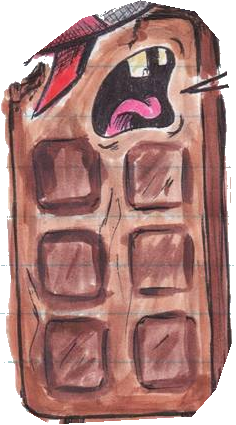
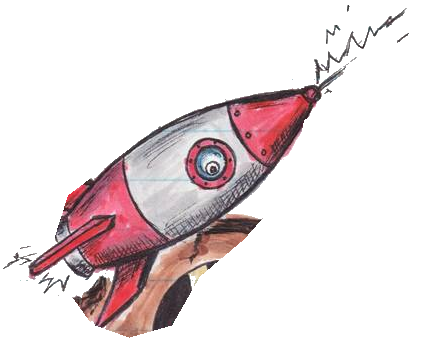
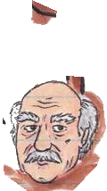
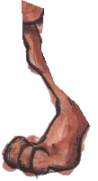
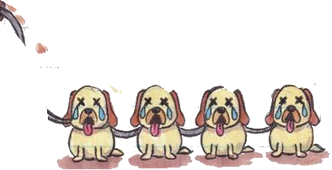
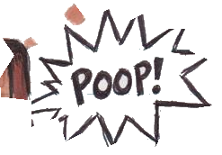
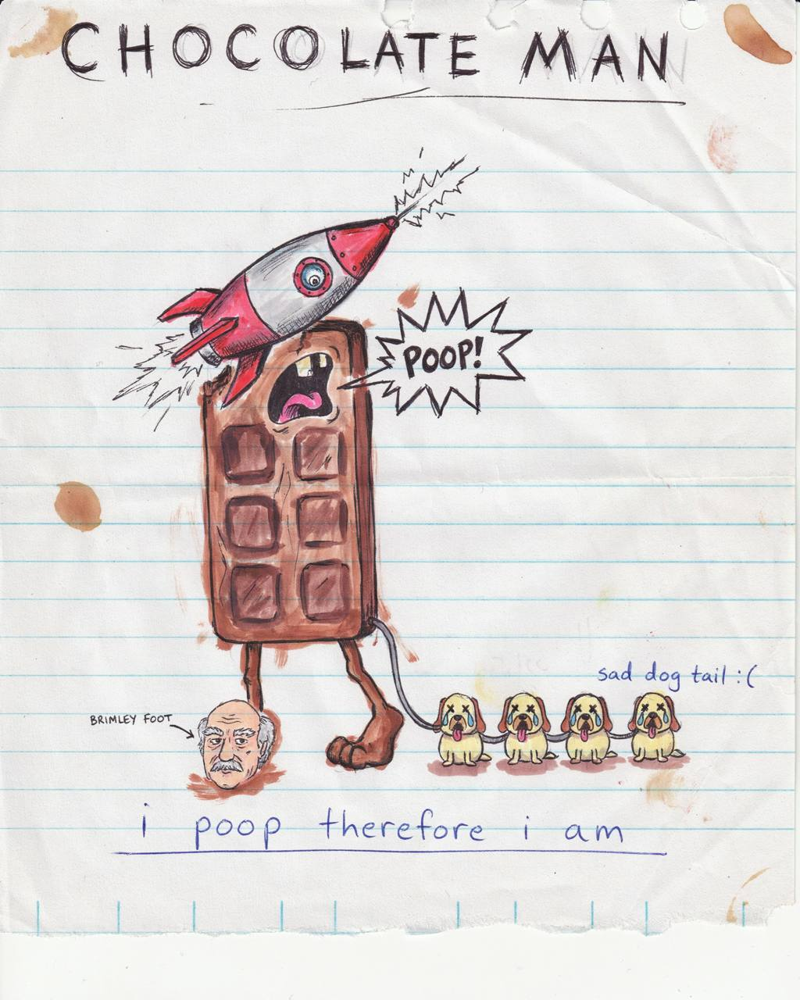

Your first PJangler project.
Start by opening Terminal on your Mac. It is a text remote control: you type a short instruction, and your computer does it.
- Expected outcome
- A Terminal window opens. A blinking cursor waits beside a prompt. The prompt is your computer’s “ready for the next instruction.”
- If not
- If Spotlight is unavailable, find Terminal in Finder → Applications → Utilities.
Press ⌘ Command + Space
ILLUSTRATIVE · Spotlight’s appearance may differ.
Before step 2 · Rererere’s readiness checklist
This is a project tour, not an installer. Rererere prepares and confirms these first:
- The installed
pjand its registry work on Studio; Node, Git, Copier and BMAD prerequisites are ready. ~/codeexists;studio-notesis a new, unused name.- The skills catalog and global/project discovery are configured; TextEdit is available for this tour.
- The ticket provider, workspace and a new practice board are preapproved. No credentials or provider identifiers are guessed here.
Readiness required. As of 27 Oct 2026, published npm 1.5.18 has a Linux registry proof; full Studio bootstrap, BMAD creation and repeat-create acceptance are still pending. Source-supported commands are not proof that Studio is ready.
Until Rererere confirms readiness, read or rehearse the page only. This page does not install software, run commands, hire agents or connect services.
A hands-on companion to the conceptual field guide. Scroll at your pace. Copy never runs anything.
IN THE PORT






Go to your project shelf.
Click Copy command. Click beside the waiting cursor in Terminal, press ⌘ V to paste, then Return to run it.
- Expected outcome
- The prompt returns, often with no other message. Terminal is now standing in your code folder.
- If not
- If it says the folder is missing, STOP and ask Rererere. Do not try sudo, a random npm command or a manual project-folder fix.
cd ~/code~/your home folder→codethe project shelfcd means “go to this folder.” ~/ means “start at my home folder.”
How to tell when a command is finished
Wait until the prompt and cursor return before pasting the next command. A prompt may end in % or $; those are not part of a command. Our Copy buttons omit them.
Optional: type pwd and press Return. It prints the folder you are standing in; its final part should be /code.
We use studio-notes for the whole tour. If you want a different name, agree it with Rererere before starting and use it consistently. Do not create its folder yourself: PJangler does that.
Look before you build.
Preview a project called studio-notes. The words --dry-run explicitly mean “show the plan; do not write it.”
- Expected outcome
- A proposed plan appears and the prompt returns. Check the destination ends in
/code/studio-notesand the board/workspace match Rererere’s plan. No project is created by this preview. - If not
- If the name exists, the workspace is wrong or the command fails, keep the message and ask Rererere. Do not add
--force.
pj init studio-notes --dry-runA new studio-notes folder, a CommonProject starter scaffold, a project manifest, a registry entry and the intended ticket board.
Why explicitly say --dry-run?
The help calls preview the default. But both the checked source and the published 1.5.18 bundle allow a plain pj init studio-notes to apply changes in an interactive Terminal. We use the explicit preview flag so that this step stays a preview.
CommonProject is the starter template; PJangler is the tool that assembles and checks it.
↑ THIS WAY?
Approve the build.
Only after the preview is agreed, run the apply command. PJangler creates the project folder for you.
At the checklist: ↑ ↓ move, Space toggles a row, Return submits.
- Expected outcome
- After Return, wait for completion and the prompt. Check for no failure and for the intended board being confirmed—not merely a folder appearing. This can take a while.
- If not
- At a question you do not understand, use Ctrl C to cancel before submitting. After work starts, cancellation is not an undo. If it fails, stop; Rererere inspects what actually changed.
pj init studio-notes --applySelect project init operations to run:
- Refresh the project registry index
- Render CommonProject scaffold
- Write authoritative repo-local .project.json
- Create/link ticket provider project
Offered rows start selected. Leave the agreed rows selected; you do not need Space unless changing one.
Which questions will I actually see?
With this exact named command on a fresh target, the verified PJangler prompt is the operations checklist. It does not ask for an API key, model, employee roster or ticket workspace in a later wizard.
If the name is omitted and there is no existing project to adopt, the source can ask “Project name” and “Project directory”. That is a different route. An existing project may show extra repair rows. If either happens here, cancel and confirm the starting folder with Rererere.
Board creation is enabled by default; it does not need --live. The command relies on operator-configured provider/workspace settings. If those are not preapproved, do not submit. No --yes is used: it would skip your checklist.
Rererere should confirm all required build stages, including BMAD. A registry success is not full bootstrap acceptance; no universal rollback or harmless retry is promised.
Step inside your project.
After successful setup, move Terminal into the new project. Creating a folder does not move you into it.
- Expected outcome
- The prompt returns. Stay in this Terminal and folder for the remaining commands.
- If not
- If the folder is missing, setup did not complete as expected. Stop and ask Rererere rather than making an empty replacement folder.
cd ~/code/studio-notes~/code→studio-notesPJangler runs as a separate program. It cannot move the Terminal shell that launched it.
Find it in the directory.
Ask PJangler for its list of registered projects. Find the entry for your new project.
- Expected outcome
- The project appears among the registered entries. The registry is an index; your source files are still in your project folder.
- If not
- If it is absent or the registry cannot be reached, show Rererere the result. Do not run another init to hide the failure.
pj listThe registry knows where a project manifest lives. This list does not prove the board works, hire an agent or accept the whole setup.
Optional · inspect only this project
Type pj info and press Return. Inside this folder it reads the local manifest and shows registry status. It can read the local manifest even when the registry is unavailable.
The registry does not automatically discover every folder on your Mac. It indexes registered manifest locations.
COPIER
Read the project’s house rules.
Open AGENTS.md in TextEdit. Read it; no edit is needed for this tour.
- Expected outcome
- TextEdit opens the actual file. When finished, close its window and click Terminal again.
- If not
- If it does not exist, do not create a pretend file. Rererere checks whether scaffold/setup completed.
open -e AGENTS.mdInstructions for AI agents
Look for this project’s purpose, working rules and conventions. The exact headings depend on the installed template.
This file is not a list of employees. Flume owns staffing.
Where should future changes go?
Project-wide instructions belong in this project’s AGENTS.md. A reusable skill’s text belongs in its canonical catalog definition, not in a generated skill link. Project identity changes belong in the owned .project.json workflow—not in copied client files.
Markdown (.md) is readable text with simple formatting. open -e tells macOS to use TextEdit, even if another app normally opens Markdown.
Read the project’s ID card.
Open the hidden dot file .project.json. It is the canonical, machine-readable definition of this project.
- Expected outcome
- TextEdit shows the real JSON file. Do not change it. Close the window and return to Terminal.
- If not
- If missing or unreadable, ask Rererere. A leading dot hides a file in Finder; it does not make it unimportant.
open -e .project.jsonproject_idThe stable project key.
project_nameThe human-readable name.
ticket_providerThe provider, workspace and board binding.
agentsA projection of Flume’s org chart—not an independent roster.
Why two kinds of project information?
.project.json is the source of identity. The registry is a rebuildable index of known manifest locations. Editing one does not mean editing a second, competing definition.
The name, stable ID and a provider’s board ID are different things. Do not replace one with another by guesswork.
BRIMLEY?
Find this project’s skills.
Open the project’s .agents folder in Finder. Look for the selection file and the activated skills folder.
- Expected outcome
- Finder opens
studio-notes/.agents. Inspect the two names, then return to Terminal. - If not
- If the folder or selection is missing, setup may be incomplete. Ask Rererere; do not mkdir a replacement or copy a random skill in.
open .agentsskills.jsonThe selection: which set, packs and individual skills this project requests.
skills/The activated root: links that let agents find the selected instructions.
These are different objects: a file choosing skills, and a folder exposing them. A skill is reusable instructions—not a new AI model.
Find the shared skills shelf.
Now open the global folder in your home folder. These skills are available across projects.
- Expected outcome
- Finder opens the home-level
.agents, not the one inside studio-notes. Inspect only; return to Terminal. - If not
- If it is missing, ask Rererere to check global setup. A global edit can affect every project, so this tour makes none.
open ~/.agents~/.agents/skills.jsonThe shared global selection.
~/.agents/skills/The globally activated skills root.
Catalog, set, pack: three different ideas
The catalog stores canonical skill definitions. Its location is operator-configured; you do not need a particular ~/code/skillex checkout.
A set replaces its scope-owned root; a pack adds member links to that scope. A project set does not erase the global layer. Effective skills are the deduplicated union of global and project-specific selections.
Optional read-only global check: pj skills status --scope global --json. Do not copy older help’s reversed “composable sets / exclusive packs” descriptions as the rule.
Check what agents can find.
Inspect both global and project skills without changing either. "$PWD" means “the folder Terminal is in now.” Keep the quotes.
- Expected outcome
- A structured text report describes both scopes. JSON is just labeled data. Global plus this project’s skills form the effective selection.
- If not
- If it reports drift or exits with code 6, a difference needs attention—not a reason to reinstall everything. Show Rererere the report.
pj skills status --scope both --project "$PWD" --jsonCompare desired selection with actual activation and CLI reachability. “Selected” alone does not prove an agent can discover it.
How do I check why one skill is present?
Use the explain command with a real canonical name you find in the report or next step’s catalog. Its syntax is pj skills explain NAME --scope both --project "$PWD" --json. Here NAME is notation, not a runnable command to copy.
It reports declarations, exclusions, blockers and reachability. Throughout this tour, pj skills is the single surface for Skillex; a separate skillex executable need not be on PATH.
Browse the skill catalog.
List the skills actually available in your configured catalog. Pick one name you recognize; no skill is added by listing it.
- Expected outcome
- The configured catalog’s canonical names and descriptions appear. This is the supply shelf, not a claim that all its skills are enabled.
- If not
- If the catalog is unavailable or empty unexpectedly, Rererere checks the catalog configuration—not a random download.
pj skills skill listRead a name and its description. Do not assume another person’s catalog, a web example or a remembered skill exists on this Mac.
Optional later · add one project skill with Rererere
First choose a real name from this list. Preview the project-only change with pj skills enable skill NAME --scope project --project "$PWD" --dry-run --json. Replace NAME with that actual name; this notation deliberately has no Copy button.
After reviewing the proposed selection and links, the same command without --dry-run applies it immediately. Then inspect status again. This is optional, not required to complete the tour; never use global scope for this practice.
Preview the project’s skill links.
Ask what sync would change for this project only. Keep --dry-run: this step does not change any links.
- Expected outcome
- A link/alias/receipt plan appears. No planned managed changes is a useful result; differences should be read, not blindly applied.
- If not
- If the plan would remove unrelated skills, mutate a shared set or contradict “sets replace, packs add,” stop and show Rererere. Do not remove the preview flag.
pj skills sync --scope project --project "$PWD" --dry-run --json.agents/skills.json says what you want..agents/skills/ is where agents find it.
Sync reconciles the two.
Why not simply run sync?
Without an explicit scope, this CLI can sync global and project roots. We name --scope project and use --dry-run so the exercise stays bounded and read-only. We do not run a global mutation.
Meet the planning toolkit.
Open _bmad in Finder. BMAD supplies planning, build and review instructions installed for this project. It is not an AI model.
- Expected outcome
- Finder opens the installed BMAD tree. Look around without editing, then return to Terminal. You have not started a planning session yet.
- If not
- If
_bmadis missing after supposedly successful setup, Rererere checks BMAD readiness. Do not treat registry registration as a BMAD install proof.
open _bmad_bmad/Installed BMAD modules and configuration.
_bmad-output/Planning/build documents produced during work; it may not exist yet.
.agents/skills/BMAD skill entry points may also be activated here, depending on setup.
TOOLKIT
Check BMAD before changing it.
Run a targeted audit. An audit reads and compares; it does not upgrade the project.
- Expected outcome
- A focused BMAD version finding appears: current, different, missing, skipped or blocked as appropriate to the actual installation.
- If not
- If missing, unavailable or unclear, ask Rererere. Do not convert every audit warning into an automatic repair.
pj audit --rules bmad.versionThe rule compares the installed BMAD version with the version this CLI expects. A difference can mean an available update, not “everything is broken.”
Optional · a wider health check
pj audit checks project conventions more broadly without applying migrations. Read the individual findings; host and project findings have different owners.
The next three maintenance actions form a supervised, optional upgrade lesson. A fresh project that is already current does not need an upgrade.
Rehearse one upgrade.
Preview only the bmad.version migration. A migration is a recipe that brings a project convention forward.
- Expected outcome
- A targeted plan explains what would happen, or why it is unnecessary or blocked. The preview writes no project changes.
- If not
- If the plan is unclear or unexpectedly broad, stop and review it with Rererere. Do not use
migrate --all.
pj migrate bmad.version --dry-runThis previews the BMAD version change. It is not the legacy registry import, and it is not an instruction to repair all findings.
What does the preview guarantee?
It shows the selected rule’s intended work, not a promise that the external installer will succeed later. Versions, dependencies and the project’s state can affect the actual run.
There is no universal “undo everything” promise. Save or commit your work and review the target before an agreed upgrade.
Upgrade only when agreed.
OPTIONAL · supervised change
If an upgrade is needed, Rererere agrees the target and checks that current changes are saved or committed first. Otherwise, skip to the finish.
- Expected outcome
- On an agreed successful run, review the changed files with Rererere. Then repeat the audit from step 15 to verify the result.
- If not
- If the migration fails or reports partial changes, keep the output and stop. Do not assume rollback, keep rerunning, or repair every rule at once.
pj migrate bmad.versionAfter the upgrade · verify, don’t assume
Run pj audit --rules bmad.version again in this same folder. Ask Rererere to compare its finding with the preview and the actual changed files. The migration command applies without --apply; that flag is not supported here.
You may skip the write entirely if already current. An optional maintenance lesson is not a reason to change a working install.
STAND BACK
Your project has an address. You know the rooms.
Tick only what you actually did. Reading progress is not execution evidence; these are your own notes.
- Expected outcome
- You can point to the project folder, explain its two key files and tell the global skill shelf from the project one.
- If not
- Leave an unfinished item unticked. Tell Rererere the step number and show the real message—no need to guess a fix.
These checkmarks are saved only in this browser when local storage is available. They do not inspect your Mac or report to anyone.
Meet the original Chocolate Man drawing
Original drawing: user-supplied artwork, used with permission. Cutout animation preserves the actual six-block bar, pink shouting mouth, rocket, Brimley Foot, oversized bare foot and exactly four sad dogs. No new eyes. No sensible explanation.

Command/source check: 27 Oct 2026. No live setup or Studio acceptance is claimed by this page.